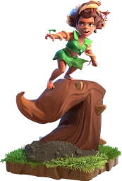

Root Rider — Clash of Clans
Updated: 26 August 2026 · By the Goblins Farm team
The Root Rider targets defences and destroys walls simply by walking through them, which removes the two things that usually break a ground attack: distraction and geometry.
- Housing space
- 20
- Levels
- 4
- Trained in
- Barracks
- Targets
- Ground only
- Attack speed
- 2.2s
- Range
- 1 tiles
- Role
- Elixir troop
- Movement
- Ground, breaks walls while moving
What it does
Two properties matter. It prefers defences, so it self-directs toward the buildings that matter rather than eating the perimeter. And it destroys walls in its path as it moves, so compartmentalisation, the main defensive tool against ground armies, does much less against it.
Combined with high hitpoints, that makes it one of the most self-sufficient ground units in the game: it needs less funnelling and fewer Wall Breakers than almost anything else.
How to use it
Deploy as a group toward the defensive core and support them.
- Spend the saved housing on spells and support rather than on Wall Breakers you no longer need.
- Watch for splash. Durability is not immunity, and a group moving together is a group under one shell.
- Bring clean-up troops for the non-defensive buildings they ignore until the end.
How to beat it
Since walls and funnelling matter less, defence against Root Riders is about raw damage in the right places: splash coverage on the routes into the core, and single-target damage sustained enough to wear down high hitpoints. Traps positioned on the direct line to the defensive core also perform well, because the unit takes the direct line by design.
Stats by level
| Level | Hitpoints | DPS | Research cost | Research time | Town Hall |
|---|---|---|---|---|---|
| 1 | 6,200 | 95 | — | — | 15 |
| 2 | 6,350 | 105 | 15,000,000 Elixir | 8 d | 15 |
| 3 | 6,500 | 115 | 17,600,000 Elixir | 10 d | 16 |
| 4 | 6,700 | 125 | 30,000,000 Elixir | 16 d | 18 |

Where these numbers come from. Read from Clash of Clans' own game files, client build 18.400.21. They are exact for that build and do not reflect anything released after it, so verify in game before committing an upgrade.
Game values are read from Supercell's own game files, reproduced as fan content under Supercell's Fan Content Policy. Goblins Farm is not affiliated with, endorsed, sponsored, or specifically approved by Supercell, and Supercell is not responsible for it.
 Frequently asked
Frequently asked
Do walls stop Root Riders?
Not meaningfully. Root Riders destroy walls in their path as they move, so heavily compartmented layouts provide much less protection against them than against ordinary ground troops.
Do Root Riders need Wall Breakers?
No, which is a large part of their appeal. Because they break through walls themselves and target defences directly, an army built around them can spend the housing space usually reserved for Wall Breakers on spells or support instead.
 Keep reading
Keep reading
Goblins Farm is not affiliated with, endorsed by, sponsored by, or specifically approved by Supercell. Clash of Clans is a trademark of Supercell Oy. This material is unofficial fan content produced under Supercell's Fan Content Policy. Game values change with every update; always verify in-game before committing an upgrade.